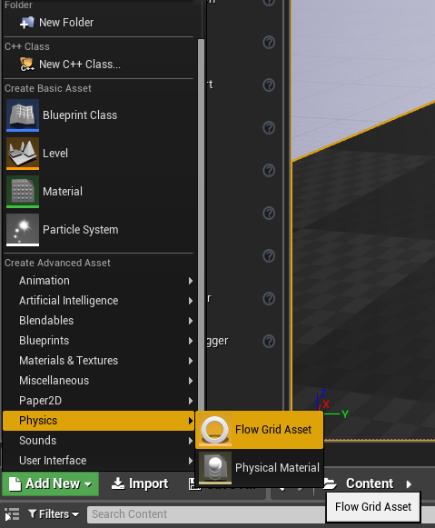
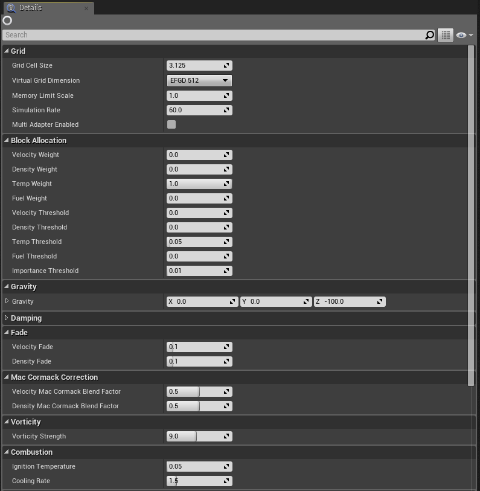
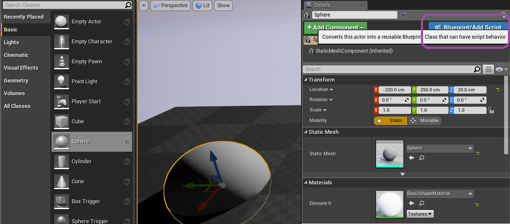
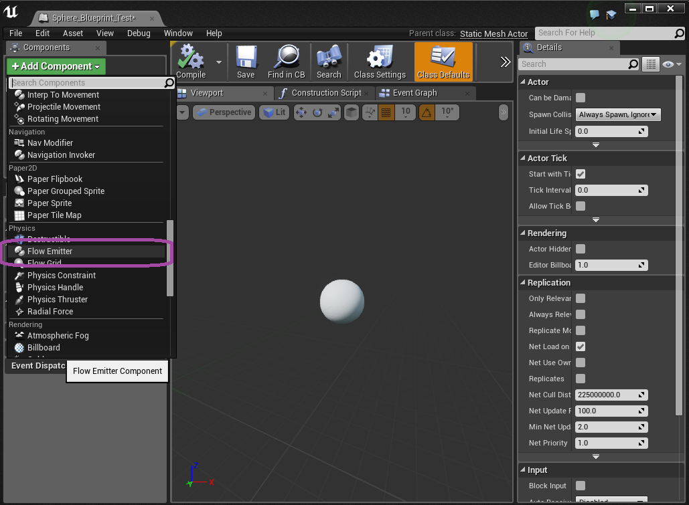
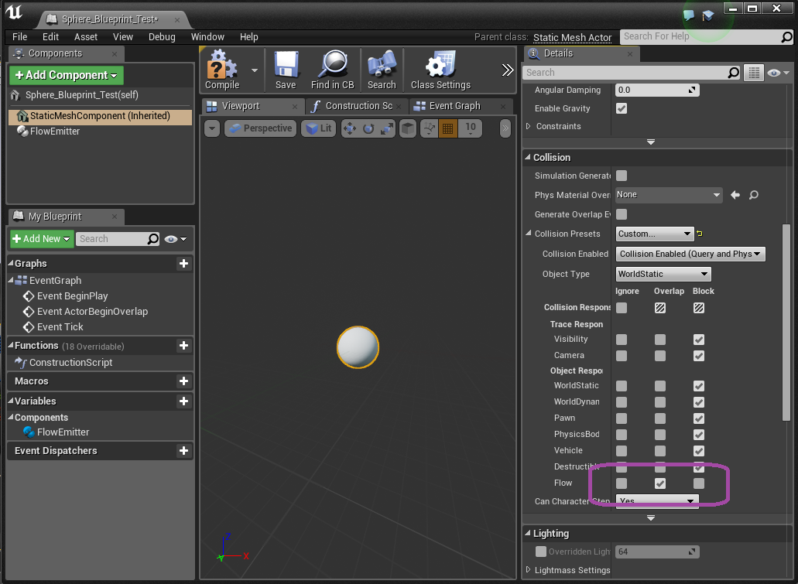

Flow - UE4 Manual |  |
Table of Contents
Prerequisites
The information in this document applies to the following software versions:
- NVIDIA Flow 0.1.1 Beta
- EpicGames Unreal 4.12
Flow requires a DX11 capable GPU and Windows.
The Unreal 4 integration of Flow is available to all Unreal licensed developers through the NVIDIA Github channel, please visit: https://github.com/NvPhysX/UnrealEngine/tree/Flow for the latest distributions.
This documentation is designed for technical artists and developers using the UE4 Flow integration. For more background on Flow see the SDK manual included in the developer library package available on NVIDIA DevZone:
https://developer.nvidia.com/nvidia-flow
Introduction
Nvidia Flow is a GPU-based dynamic grid fluid simulation library for real-time applications.
Flow leverages D3D11.3 Volume Tiled Resources (hardware sparse texture) when available to accelerate fluid simulation. Due to hardware limits, current tiles are 64 KB. With typical data formats, this means that Flow allocates simulation blocks consisting of 32x16x16 cells. These blocks are dynamically made active/resident in regions of interest, optimizing performance and allowing domains larger than possible with fully resident grids.
Volume rendering is used to visualize simulation results. In the current implementation, the density and temperature fields are ray marched. A color map is used to control color and opacity as a function of temperature. Density combines with the color map opacity result to determine final sample opacity.
Cell Size
The grid cell size controls the resolution. Higher resolution means more detail, but also means more cells must be simulated for the same volume. For performance tuning, keep in mind volume is the cell size cubed (gridCellSize^3). This means small changes to the grid cell size will have a proportionally larger impact on performance.
Grid
A grid forms the simulation domain with Flow. It is responsible for nearly all Flow memory allocation. It controls fundamental simulation behavior.
Creating a grid
To create a grid, left-click Add New in the Content Browser, and choose .
Grid Properties
Give the grid an appropriate name, e.g.: FlowGridFireAsset, and double click to open it's property sheet.

The grid contains parameters controlling memory use and performance, along with simulation behavior and rendering settings.
| Grid | |
|---|---|
| Attribute | Notes |
| Grid Cell Size | See Cell Size section. |
| Virtual Grid Dimension | The length in virtual cells of each axis. The combination of grid cell size and virtual grid dimension determines the extents of the grid address space. This is visualized in the editor by clicking on the flow grid actor. The ‘flowvis’ command will also visualize the grid extents. |
| Memory Limit Scale | Controls the relative memory usage with respect to the default value. For higher cost effects, the default limit can be increased. This is likely necessary if the ‘flowvis’ visualization indicates that blocks expected to allocate are unable. This is often observed as a cube shaped clipping effect. |
| Simulation Rate | Controls the grid update rate. Fixed time stepping is used for consistent behavior. The simulation rate can be increased to improve grid response time, at the cost of performance. |
| Multi Adapter Enabled | Allows the grid to simulate on secondary GPUs when available, offering a potential performance increase. (currently win10 only) |
The velocity, density, temperature, and fuel weights and thresholds control what blocks the grid allocates beyond what emitters allocate. The default settings are targeted for flame with limited smoke, so only the temperature weight is nonzero. The temperature threshold needs to be greater than zero to be effective at deallocation. The threshold should be aligned with the color map alpha, so that the effect is visually faded before deallocation.
| Block Allocation | |
|---|---|
| Attribute | Notes |
| Velocity Weight | Relative importance of velocity for allocation, 0.0 means not important. |
| Density Weight | Relative importance of density for allocation, 0.0 means not important. |
| Temp Weight | Relative importance of temperature for allocation, 0.0 means not important. |
| Fuel Weight | Relative importance of fuel for allocation, 0.0 means not important. |
| Velocity Threshold | Minimum velocity magnitude that is considered relevant. |
| Density Threshold | Minimum density magnitude that is considered relevant. |
| Temp Threshold | Minimum temperature magnitude that is considered relevant. |
| Fuel Threshold | Minimum fuel magnitude that is considered relevant. |
| Importance Threshold | Global importance threshold, to scale quality/performance. |
| Simulation | |
|---|---|
| Attribute | Notes |
| Gravity | Gravity vector for use by buoyancy. This specifies not only direction, but can be used to increase or decrease the buoyant force. |
| Velocity Damping | Higher values reduce velocity faster (exponential decay curve). |
| Density Damping | Higher values reduce density faster (exponential decay curve). |
| Velocity Fade | Fade velocity rate in units / sec. Compared to damping, fade reduces low values faster. |
| Density Fade | Fade density rate in units / sec. Compared to damping, fade reduces low values faster. |
| Velocity MacCormack Blend Factor | Higher values make a sharper appearance, but with more artifacts. |
| Density MacCormack Blend Factor | Higher values make a sharper appearance, but with more artifacts. |
| Vorticity Strength | Higher values increase rotation, reduce laminar flow. |
| Ignition Temperature | Minimum temperature for combustion. |
| Cooling Rate | Cooling rate, exponential. |
| Collision | |
|---|---|
| Attribute | Notes |
| Object Type | Enum indicating what type of object this should be considered as. It is ideal to create a Flow collision channel, where the Flow grid is set to a Flow object type, allowing emitters to overlap/block against the Flow channel as desired. |
| Response To Channels | Controls which types of objects the Flow grid will consider when gathering collision/emitter shapes from the world. Setting a particular object type response to Ignore will disable all emitters/colliders with that object type. |
| Rendering | |
|---|---|
| Attribute | Notes |
| Rendering Alpha Scale. | Provides a convenient global opacity scale. |
| Color Map | Controls color and opacity as a function of temperature. |
| Color Map Min X | Color curve minimum X value. The color map is a 1D texture internally, this specifies the lower temperature properly described in the 1D texture. Lower values are clamped. |
| Color Map Max X | Color curve maximum X value. The color map is a 1D texture internally, this specifies the upper temperature properly described in the 1D texture. Higher values are clamped. |
| Rendering mode | Provides access to useful visualizations, such as a density visualization (render mode 1) and a velocity field visualization (render mode 5). Render mode 0 is the default color map mode. |
| Adaptive Screen Percentage | Experimental VR feature. Allows ray march resolution to vary to manage total frame time. |
| Adaptive Target Frame Time. | Experimental VR feature. Target frame time for adaptive screen percentage. |
| Max Screen Percentage | Provides control of offscreen ray march resolution relative to main render target resolution. Is used even when Adaptive Screen Percentage is disabled. |
| Min Screen Percentage | Experimental VR feature. Minimum ScreenPercentage when Adaptive is enabled. |
| Debug Wireframe | If enabled, visualizes the grid extents and the active grid blocks. |
Placing a grid
To place a grid, drag the asset into the level. The grid should be placed in the center of the region of interest. Left-clicking the placed grid actor will show the grid extents.
Emitters
Emitters are the mechanism to create activity in a Flow grid. The shape of an emitter is currently established using PhysX collision shapes. Parameters for the emitter are set using a Flow emitter component.
Creating an Emitter
To create a basic sphere emitter, drag a sphere into the level. Select that sphere, and in the details pane, click the Blueprint/Add Script button to create a blueprint that includes a sphere component.
Once the blueprint has been named, an editor window for the blueprint will open. In the Components pane, click Add Component and select Flow Emitter. Clicking on the new Flow Emitter component will show available parameters in the details pane.
In the blueprint editor, select the StaticMeshComponent (Inherited). In the details pane, go the collision section. Set the Collision Presets to Custom..., and set the Flow channel to Overlap in the Collision Response.
Drag this new emitter blueprint into the level, inside the extents of a Flow grid.Tuning an Emitter
The emitter velocity, density, temperature, and fuel settings are all target values that the user would like grid cells to move towards. The rate at which the emitter moves a grid cell towards the target value is controlled by the product of the couple rate and per channel masks. Higher couple rates move towards the target values in a shorter amount of time. This property is useful for moving objects. Lower couple rates can be very useful for stationary objects, since the weaker influence on the simulation allows simulation to happen naturally instead the emitter.
Due to the couple rate properties, in practice, good results are achieved by increasing couple rate via UE4 blueprints as function of velocity. Doing this in blueprints adds a bit more authoring, but allows the user to tune behavior. It resolves the ambiguity of whether or not an emitter should emit more or less when moving.
An important concept with emitters is understanding what setting, for example, temperature to zero means. In the temperature case, if the couple rate is nonzero and temperature mask is nonzero, then the emitter is configured to drive temperature in the grid cells to zero. This may not be the intended behavior. If the intention was to not modify the temperature, then the temperature mask should be set to zero. Alternatively, the couple rate could be set to zero, but this has the effect of disabling the emitter.
Emitters also influence grid block allocation. Allocation scale controls how much of the emitter bounding box should force allocate grid blocks. An allocation scale of 0.0 disables emitter allocation, which is useful for collision shapes, where the grid only needs to be active when visible fluid is present. A nonzero allocation scale on at least one emitter is required to get any activity in the grid, since grid self-allocation uses an active block to control the active block’s own allocation and the allocation of neighboring blocks.
Multiple frames are required to make a given block resident/active. This creates a need to predict allocation needs several frames into the future to avoid possible artifacts. Increasing allocation scale is a non-directional option to achieve this. Allocation predict is the directional option. It allocates in the direction of the emitter velocity, making it ideal for prediction along trajectories.
| Emitter | |
|---|---|
| Attribute | Notes |
| Linear Velocity | The target linear velocity. If Blend In Physical Velocity is nonzero, this target velocity is added to the physical velocity. |
| Angular Velocity | The target angular velocity. If Blend In Physical Velocity is nonzero, this target velocity is added to the physical velocity. |
| Blend In Physical Velocity | Factor between 0 and 1 to blend in physical velocity of actor. 0.0 means the physical velocity has no impact on the emitter's velocity target. 1.0 means the emitter uses the physical velocity as a base velocity, adding extra Linear Velocity or Angular Velocity as set. |
| Density | The target density. Density influences visual opacity. |
| Temperature | The target temperature. Temperature is an input to the color map and influences combustion rate and buoyancy. |
| Fuel | The target fuel value. Fuel is converted to temperature and density when combustion is active. This fuel is treated as gaseous. |
| Fuel Release Temp | The threshold temperature to release Fuel Release additional fuel. Helps simulate solid fuels where heat must be applied for gaseous-like fuel to be released. |
| Fuel Release | The amount of additional fuel to release when Fuel Release Temp has been exceeded. Helps simulate solid fuels where heat must be applied for gaseous-like fuel to be released. |
| Allocation Predict | Directional block allocation prediction. Time factor used for pre-allocation of grid cells for fast emitters. |
| Allocation Scale | Controls emitter allocation behavior. 0.0 turns emitter allocation off. 1.0 is default. Values greater than 1.0 help pre-allocate, especially when direction is difficult to predict. |
| Collision Factor | 0.0 is pure emitter. 1.0 makes entire shape interior a collider. |
| Emitter Inflate | Allows inflation of emitter outside of shape surface. |
| Couple Rate | Rate at which grid cells move to emitter target values. |
| Velocity Mask | 1.0 makes velocity change based on CoupleRate. 0.0 makes emitter have no effect on velocity. |
| Density Mask | 1.0 makes density change based on CoupleRate. 0.0 makes emitter have no effect on density. |
| Temperature Mask | 1.0 makes temperature change based on CoupleRate. 0.0 makes emitter have no effect on temperature. |
| Fuel Mask | 1.0 makes fuel change based on CoupleRate. 0.0 makes emitter have no effect on fuel. |
| Num Substeps | Super sampling of emitter shape along it's path in the flow grid. Improves quality for fast moving emitters at the cost of performance. |
Console Commands
| Command | Description |
|---|---|
| flowvis | Enables visualization of the Flow grid extents, visualizes the active grid blocks. |
Limitations / Known Issues
The Flow UE4 integration does not currently expose all of the features in the Flow SDK, such as signed distance field support. These features will be added in a future release.
Flow block allocation is not deterministic. Allocation may behave differently between separate runs, GPUs, and versions.